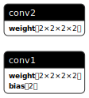

PyTorch Model
Introduction
Mabor supports importing model weights from PyTorch, whether you've trained your model in PyTorch or
want to use a pre-trained model. Mabor supports importing PyTorch model weights with .pt and
.safetensors file extensions. Compared to ONNX models, these files only contain the weights of the
model, so you will need to reconstruct the model architecture in Mabor.
This guide demonstrates the complete workflow for exporting models from PyTorch and importing them into Mabor. You can also refer to this Transitioning From PyTorch to Mabor tutorial for importing a more complex model.
Exporting Models to PyTorch Format
To export a PyTorch model correctly, you need to save only the model weights (state_dict) using the
torch.save function, not the entire model.
Example: Exporting a PyTorch Model
import torch
import torch.nn as nn
class Net(nn.Module):
def __init__(self):
super(Net, self).__init__()
self.conv1 = nn.Conv2d(2, 2, (2,2))
self.conv2 = nn.Conv2d(2, 2, (2,2), bias=False)
def forward(self, x):
x = self.conv1(x)
x = self.conv2(x)
return x
if __name__ == "__main__":
# Set seed for reproducibility
torch.manual_seed(42)
# Initialize model and ensure it's on CPU
model = Net().to(torch.device("cpu"))
# Extract model weights dictionary
model_weights = model.state_dict()
# Save only the weights, not the entire model
torch.save(model_weights, "conv2d.pt")
If you accidentally save the entire model instead of just the weights, you may encounter errors during import like:
Failed to decode foobar: DeserializeError("Serde error: other error:
Missing source values for the 'foo1' field of type 'BarRecordItem'.
Please verify the source data and ensure the field name is correct")
Verifying the Export
You can verify your exported model by viewing the .pt file in
Netron, a neural network visualization tool. A properly
exported weights file will show a flat structure of tensors, while an incorrectly exported file will
display nested blocks representing the entire model architecture.
When viewing the exported model in Netron, you should see something like this:

Importing PyTorch Models into Mabor
Importing a PyTorch model into Mabor involves two main steps:
- Defining the model architecture in Mabor
- Loading the weights from the exported PyTorch model
Step 1: Define the Model in Mabor
First, you need to create a Mabor model that matches the architecture of the model you exported:
#![allow(unused)] fn main() { use mabor::{ nn::conv::{Conv2d, Conv2dConfig}, prelude::*, }; #[derive(Module, Debug)] pub struct Net<B: Backend> { conv1: Conv2d<B>, conv2: Conv2d<B>, } impl<B: Backend> Net<B> { /// Create a new model. pub fn init(device: &B::Device) -> Self { let conv1 = Conv2dConfig::new([2, 2], [2, 2]) .init(device); let conv2 = Conv2dConfig::new([2, 2], [2, 2]) .with_bias(false) .init(device); Self { conv1, conv2 } } /// Forward pass of the model. pub fn forward(&self, x: Tensor<B, 4>) -> Tensor<B, 4> { let x = self.conv1.forward(x); self.conv2.forward(x) } } }
Step 2: Load the Weights
You have two options for loading the weights:
Option A: Load Dynamically at Runtime
This approach loads the PyTorch file directly at runtime, requiring the mabor-import dependency:
use crate::model; use mabor::record::{FullPrecisionSettings, Recorder}; use mabor_import::pytorch::PyTorchFileRecorder; type Backend = mabor_ndarray::NdArray<f32>; fn main() { let device = Default::default(); // Load weights from PyTorch file let record = PyTorchFileRecorder::<FullPrecisionSettings>::default() .load("./conv2d.pt".into(), &device) .expect("Should decode state successfully"); // Initialize model and load weights let model = model::Net::<Backend>::init(&device).load_record(record); }
Option B: Pre-convert to Mabor's Binary Format
This approach converts the PyTorch file to Mabor's optimized binary format during build time,
removing the runtime dependency on mabor-import:
#![allow(unused)] fn main() { // This code would go in build.rs or a separate tool use crate::model; use Mabor::record::{FullPrecisionSettings, NamedMpkFileRecorder, Recorder}; use Mabor_import::pytorch::PyTorchFileRecorder; type Backend = Mabor_ndarray::NdArray<f32>; fn convert_model() { let device = Default::default(); // Load from PyTorch let recorder = PyTorchFileRecorder::<FullPrecisionSettings>::default(); let record = recorder .load("./conv2d.pt".into(), &device) .expect("Should decode state successfully"); // Save to Mabor's binary format let recorder = NamedMpkFileRecorder::<FullPrecisionSettings>::default(); recorder .record(record, "model.mpk".into()) .expect("Failed to save model record"); } // In your application code fn load_model() -> Net<Backend> { let device = Default::default(); // Load from Mabor's binary format let record = NamedMpkFileRecorder::<FullPrecisionSettings>::default() .load("./model.mpk".into(), &device) .expect("Should decode state successfully"); Net::<Backend>::init(&device).load_record(record) } }
Note: For examples of pre-converting models, see the
examples/import-model-weightsdirectory in the Mabor repository.
Extract Configuration
In some cases, models may require additional configuration settings, which are often included in a
.pt file during export. The config_from_file function from the mabor-import cargo package
allows for the extraction of these configurations directly from the .pt file.
use std::collections::HashMap; use mabor::config::Config; use mabor_import::pytorch::config_from_file; #[derive(Debug, Config)] struct NetConfig { n_head: usize, n_layer: usize, d_model: usize, some_float: f64, some_int: i32, some_bool: bool, some_str: String, some_list_int: Vec<i32>, some_list_str: Vec<String>, some_list_float: Vec<f64>, some_dict: HashMap<String, String>, } fn main() { let path = "weights_with_config.pt"; let top_level_key = Some("my_config"); let config: NetConfig = config_from_file(path, top_level_key).unwrap(); println!("{:#?}", config); // After extracting, it's recommended you save it as a json file. config.save("my_config.json").unwrap(); }
Troubleshooting and Advanced Features
Key Remapping for Different Model Architectures
If your Mabor model structure doesn't match the parameter names in the PyTorch file, you can remap keys using regular expressions:
#![allow(unused)] fn main() { let device = Default::default(); let load_args = LoadArgs::new("tests/key_remap/key_remap.pt".into()) // Remove "conv" prefix, e.g. "conv.conv1" -> "conv1" .with_key_remap("conv\\.(.*)", "$1"); let record = PyTorchFileRecorder::<FullPrecisionSettings>::default() .load(load_args, &device) .expect("Should decode state successfully"); let model = Net::<Backend>::init(&device).load_record(record); }
Debugging with Key Inspection
To help with troubleshooting import issues, you can enable debugging to print the original and remapped keys:
#![allow(unused)] fn main() { let device = Default::default(); let load_args = LoadArgs::new("tests/key_remap/key_remap.pt".into()) // Remove "conv" prefix, e.g. "conv.conv1" -> "conv1" .with_key_remap("conv\\.(.*)", "$1") .with_debug_print(); // Print the keys and remapped keys let record = PyTorchFileRecorder::<FullPrecisionSettings>::default() .load(load_args, &device) .expect("Should decode state successfully"); let model = Net::<Backend>::init(&device).load_record(record); }
Here is an example of the output:
Debug information of keys and tensor shapes:
---
Original Key: conv.conv1.bias
Remapped Key: conv1.bias
Shape: [2]
Dtype: F32
---
Original Key: conv.conv1.weight
Remapped Key: conv1.weight
Shape: [2, 2, 2, 2]
Dtype: F32
---
Original Key: conv.conv2.weight
Remapped Key: conv2.weight
Shape: [2, 2, 2, 2]
Dtype: F32
---
Automatic Handling of Non-Contiguous Indices
The PyTorchFileRecorder automatically handles non-contiguous indices in model layer names. For example, if the source model contains indices with gaps:
"model.layers.0.weight"
"model.layers.0.bias"
"model.layers.2.weight" // Note the gap (no index 1)
"model.layers.2.bias"
"model.layers.4.weight"
"model.layers.4.bias"
The recorder will automatically reindex these to be contiguous while preserving their order:
"model.layers.0.weight"
"model.layers.0.bias"
"model.layers.1.weight" // Reindexed from 2
"model.layers.1.bias"
"model.layers.2.weight" // Reindexed from 4
"model.layers.2.bias"
Partial Model Loading
You can selectively load weights into a partial model, which is useful for:
- Loading only the encoder from an encoder-decoder architecture
- Fine-tuning specific layers while initializing others randomly
- Creating hybrid models combining parts from different sources
Specifying the Top-Level Key for state_dict
Sometimes the
state_dict
is nested under a top-level key along with other metadata. In this case, you can specify the
top-level key in LoadArgs:
#![allow(unused)] fn main() { let device = Default::default(); let load_args = LoadArgs::new("tiny.en.pt".into()) .with_top_level_key("my_state_dict"); let record = PyTorchFileRecorder::<FullPrecisionSettings>::default() .load(load_args, &device) .expect("Should decode state successfully") }
Support for Enum Modules
The PyTorchFileRecorder supports models containing enum modules with new-type variants. The enum variant is automatically selected based on the enum variant type, allowing for flexible model architectures.